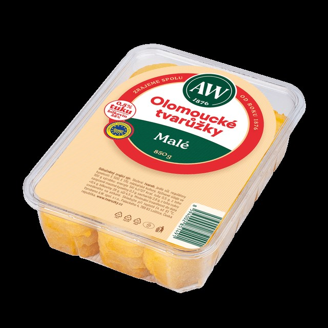
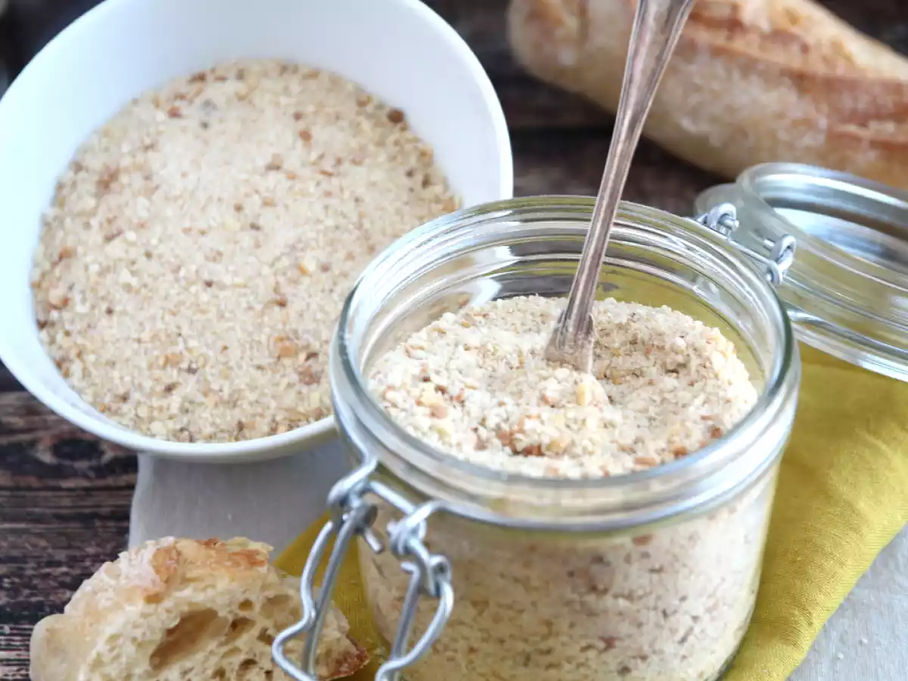
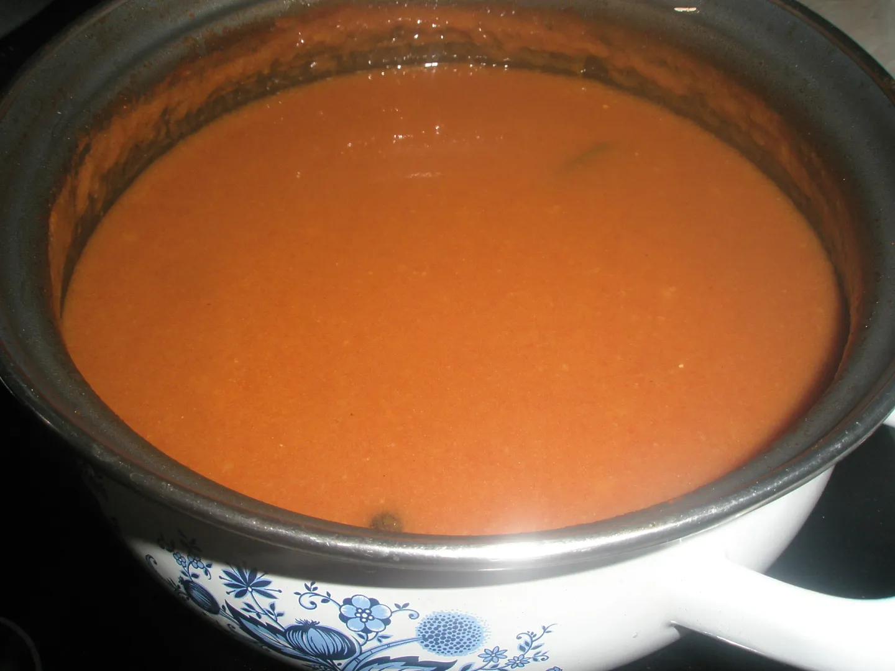

Obalované holomócké tvaróžke z hanáckó omáčkó.



Seznam surovin:
- holomócké tvaróžke (5 kosó)
- hanácká omáčka
- stróhanka
- móka polohrobá
- pár vajec
- olej
Postup příprave:
- Najprv sa rozbijó vajca a našlehajó v míse.
- Připravijó sa další 2 míse ze stróhankó a z mókó.
- Tož není obalte holomócké tvaróžke najprv v móce, pak ve vajcu a nakonec ve stróhance.
- Obalené tvaróžke osmahneme v oleji.
- Podáváme na talíři s hanáckó omáčkó.
© 2010 (±20 let), Vzdělaný lid České republiky (vzdelanylid.cz)